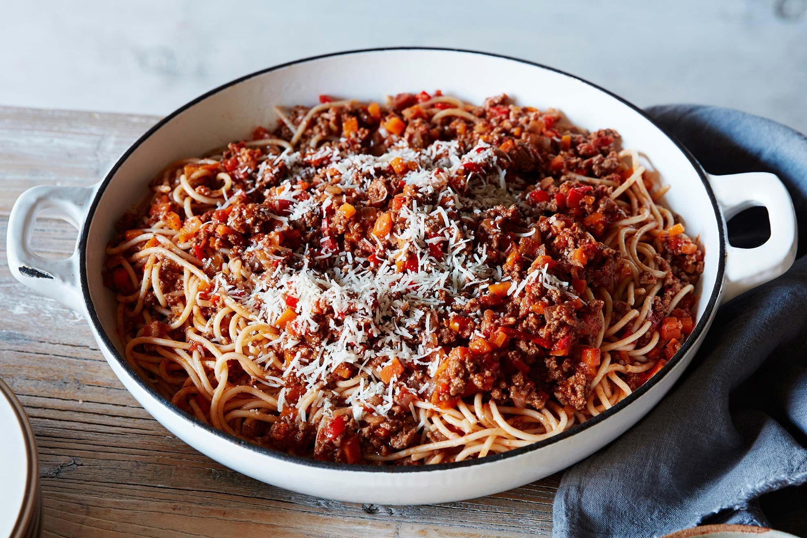

Home Page
Spaghetti Bolognese Recipe

Description
Spaghetti Bolognese is a traditional italian recipe that has been enjoyed over
the world. It is a simple recipe that requires little cooking skills and tastes delicious.
This cheesy and saucy recipe will serve 2 adults and can be turned vegitarian by using beans
and vegetables as a substitute for the mince.
Ingredients
- 500g Mince (chicken, beef, or lamb)
- 1 x Packet of Spaghetti
- 1 x Can of Diced Tomato
- 1/2 Cup water
- 1 x Jar of Bolognese Sauce
- 1 x White Onion
- 1 x Garlic Clove
- 2 x Tablespoon Salt
Steps
- Fry off and strain excess fat from mince while breaking it up on medium heat into a paper towel
- Peel and dice onion and crush garlic cloves, add olive oil to the saucepan, then add onion and garlic
- Add Diced Tomato can, bolognese Sauce and 1/2 cup of water to the mix and stir well
- Add a tablespoon of salt to pot and fill with water. Bring this pot to boil, then add the spaghetti
- Add a tablespoon of salt to the saucepan mixture and when the pasta is al dente, strain it
- Add the pasta to the saucepan and serve on plates or bowls with garnish (chives or clovers)
- Enjoy!